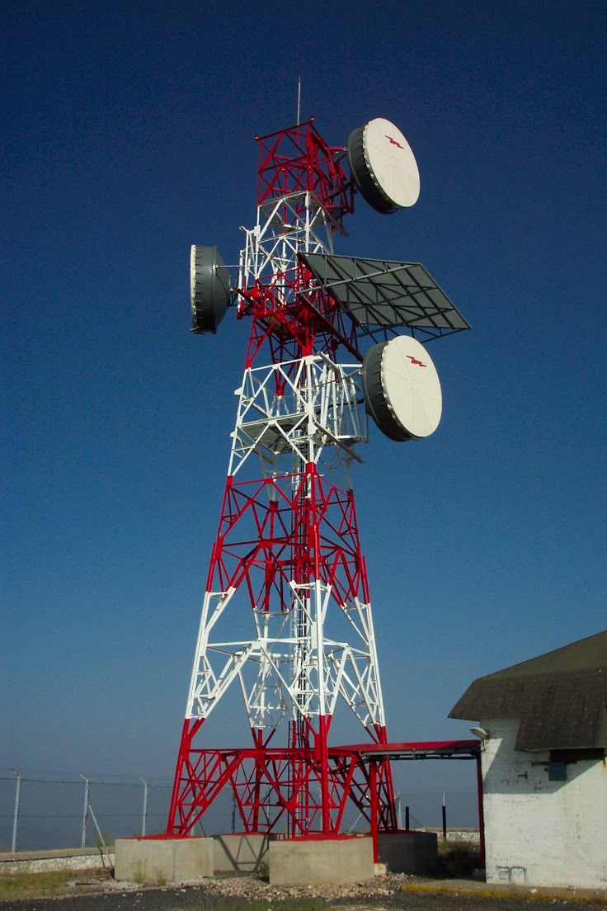

Guatemala
Operación y mantenimiento
874 sitiosMantenimiento preventivo y correctivo de radio bases Ericsson 882, 884, WCDMA 1900, GSM y equipos 3G Huawei y Nokia, para la red de transmisión TIGO Guatemala.
Sedes mencionadas: Ciudad Capital, Chimaltenango, Sacatepéquez y Tecpán.